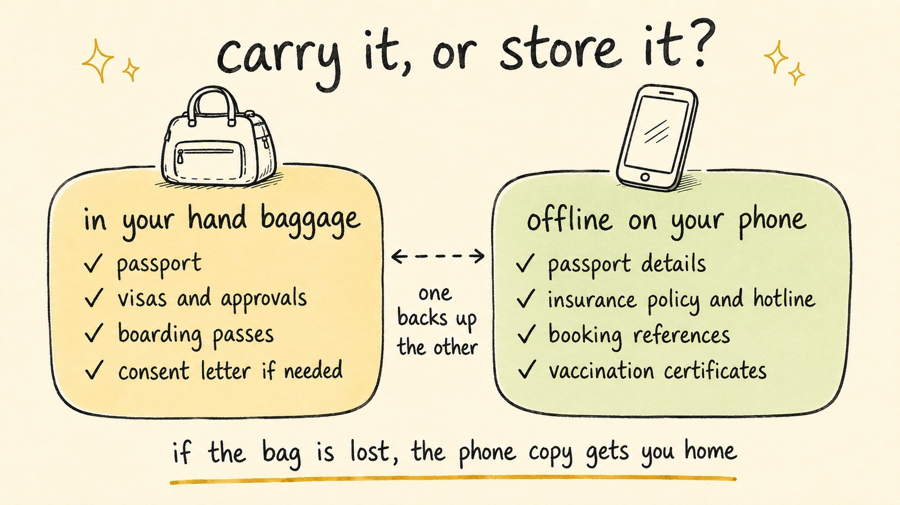

The Travel Documents People Forget (and Where to Keep Each One)
Travel Document Vault

Key Takeaways
- Most travellers forget child travel consent letters, vaccination proof, accommodation confirmations, and proof of onward travel - the supporting documents that immigration officers check at the gate.
- Carry originals: passport, visas, boarding passes, and consent letters. Store digital backups separately on your phone - encrypted and offline.
- Travel insurance policy numbers, issuer phone numbers, and coverage details belong both in physical form and in an offline digital backup accessible without internet.
- Many countries expect a consent letter for a child travelling with one parent. Without one, you risk being denied boarding.
- Offline digital copies stored separately from physical documents are your best protection if your bag is lost or stolen abroad.
Travellers often discover they've overlooked consent letters, vaccination certificates, accommodation confirmations, and proof of onward travel only when they reach the airport - documents that feel less important than a passport but matter just as much.
For the complete checklist of all documents you might need by trip type and stage, see the complete travel document checklist. This post digs into what gets forgotten and how to prepare for losing documents abroad.
The Documents People Commonly Forget
Your passport and visa feel urgent, so they get packed first. But immigration officers at the gate check for five other documents that most people overlook.
Proof of onward travel
A surprising number of countries want evidence that you plan to leave - a return flight, an onward booking to another country, or even a coach or ferry ticket will usually do. Keeping a printout or digital copy in your carry-on means you won't face delays at immigration.
Accommodation confirmations
Some countries ask to see proof of your first night's booking, whether that's a hotel confirmation, an Airbnb, or a hostel. The officer wants proof you have somewhere to stay, so download a copy to your phone offline - email won't help at the border.
Vaccination certificates
Certain destinations require proof of vaccination for yellow fever or other diseases, and requirements change periodically by destination. Check the WHO travel advice pages 6-8 weeks before travel - not the night before - as some countries only accept official WHO yellow fever certificates, not photocopies or digital photos.
Travel insurance details
You'll need immediate access to your policy number, issuer contact details, and your 24-hour emergency hotline. Some visa types explicitly require proof of travel insurance - Schengen visa applications, for example, require medical insurance covering emergency care and hospitalisation. But more importantly, if something goes wrong abroad, you need these details without relying on email or internet access.
Child travel consent letters
When a child travels internationally with only one parent (or with neither parent), many countries expect written consent from the absent parent, and notarisation is strongly recommended. Border officials in countries including Canada and South Africa routinely ask for one, and airline staff can refuse boarding without it. It's the most commonly overlooked document in family travel, so double-check before you reach the gate.

What to Carry versus What to Store Digitally
Borders want original documents, but if those originals disappear, secure digital backups are what get you home.
Carry these originals in your hand baggage
- Passport (never in checked luggage)
- Visa or entry authorisation documents
- Boarding passes (printed or on your phone)
- Travel insurance certificate (if you have a physical copy)
- Child travel consent letter if applicable
- Any approval letters or stamps from embassies
Store digitally, offline, and encrypted
- Passport number, issue date, expiry date, and place of issue
- Visa details and approval letters, photographed or saved as PDFs
- Your travel insurance policy number, with the emergency hotline also saved in your phone contacts
- Flight booking references
- Hotel and accommodation confirmations
- Vaccination certificates
- The child consent letter, if you're carrying one
- Emergency contact numbers for your embassy
Store these on your phone using an offline, encrypted app - not your camera roll, not Google Photos, not iCloud. If your physical documents go missing, you've still got everything you need to contact your embassy and prove who you are.
How to Keep Travel Insurance Details Accessible
Most travellers buy travel insurance but forget to make the policy details immediately accessible - which means when a medical emergency or lost baggage happens abroad, you're fumbling through emails rather than calling for help.
Specific details to have on hand, both on paper and digitally:
- Policy number
- 24-hour emergency hotline (this is different from general customer service)
- Coverage limits for medical evacuation (crucial - these can cost tens of thousands)
- Any exclusions or conditions that apply to your trip
The emergency number should be saved in your phone contacts separately from the physical documents. If your bag is lost or stolen, this ensures you can still access help without your physical policy document.
What Families with Children Need to Add
Every child needs their own passport for international travel, however young they are. Many countries also scrutinise child travel closely to guard against parental abduction, so expect extra questions when a child travels with only one parent.
Child travel consent letter: If a child is travelling internationally with only one parent, many border officers will ask for written consent from the absent parent, preferably notarised. If travelling with neither parent (with grandparents, for example), both parents' consent is typically required. Requirements change and vary by nationality, so verify with the official immigration authority of your destination.
A consent letter should typically include the child's full name and date of birth, passport details, travel dates and destinations, and contact details for the absent parent(s). Some destinations have specific templates; the Canadian government, for example, provides a sample consent letter format.
What this means in practice
You're boarding a flight to Canada with your 8-year-old child and your partner is not travelling. Check-in staff can refuse to board your child if you can't show written consent from your absent partner, preferably notarised. If your child is travelling with their grandparents instead of you, both parents typically need to sign the consent letter - one parent's permission alone is generally not enough. Always verify the exact requirements for your destination well before your departure date.
Travel Document Vault keeps every family member's documents in one encrypted, offline vault - consent letters, insurance details, and passports included. Scan once, and each person's profile tracks its own documents and expiry dates. Set reminders at 30, 90, or 180 days before any document expires. Download on the App Store and Google Play.
The Case for Offline Digital Copies
Physical documents help until a thief takes your bag - and usually takes the copies along with the originals. A separate encrypted backup on your phone - kept offline - is your real insurance if the originals disappear.
When your embassy needs to issue an emergency travel document, a secure backup gives them your passport number, date of issue, place of issue, and expiry date instantly, without internet access. For more on the options available, see our overview of how to store passport copies safely and the trade-offs between different approaches.
Frequently Asked Questions
What travel documents do most people forget?
The most commonly forgotten documents are child travel consent letters (required by many countries if a child travels with one parent), vaccination proof for certain destinations, proof of onward or return travel, accommodation confirmations, and digital backups. Travellers often remember their passport and visa but arrive at check-in missing supporting documents that immigration or airlines require.
What documents should I carry with me and what should I store digitally?
Carry physically: passport, visa documents, boarding passes, travel insurance certificate (accessible original or copy), and parental consent letter if applicable. Store digitally and offline: encrypted copies of passport details, policy numbers, booking reference numbers, vaccination certificates, and consent letters. This separation means if physical documents are lost, you can still prove your identity and access emergency assistance without internet.
Is a child travel consent letter really necessary?
Yes, in many countries it's expected. If a child travels internationally with only one parent, the absent parent should provide written consent, and notarisation is strongly recommended. If travelling with neither parent (with grandparents, for example), both parents typically need to consent in writing. Border officials in countries including Canada and South Africa routinely ask for this, and without it you risk being denied boarding or entry. Always verify requirements for your specific destination.
Should I keep digital backups of my documents?
Yes. Store encrypted offline copies on your phone - not in your camera roll or cloud storage. If your physical documents are lost or stolen abroad, these backups enable your embassy to process an emergency travel document much faster. They should include passport number, issue date, place of issue, insurance policy number, and booking references.
What happens if I arrive at the airport without a required document?
Forgetting your passport means you cannot board. For missing supporting documents, the outcome varies: a missing vaccination certificate might allow you to rebook and return home to obtain it, whilst a missing consent letter can result in denied boarding for your child. Some destinations offer visa-on-arrival, but most supporting documents cannot be obtained at borders. Always verify requirements 2-3 weeks before departure.